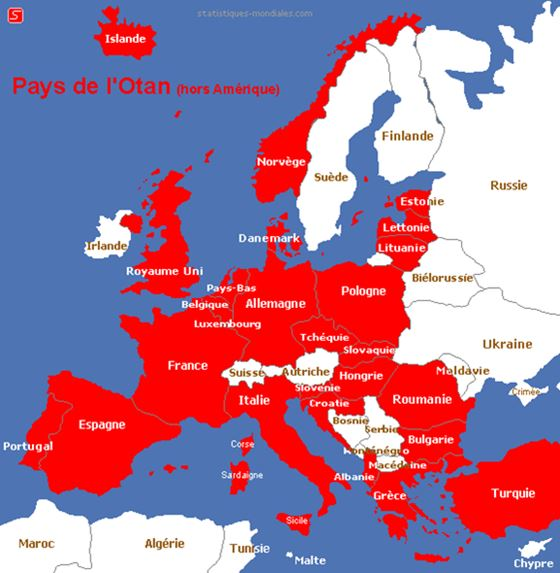

par Gabriel GALICE, Daniele GANSER, Hans von SPONECK
Si vis pacem, cole iusticiam
Devise de l’OIT
L’OTAN masse des troupes et des armes aux marches de la Russie. Nous tenons à exprimer notre inquiétude devant la propagande qui déforme la réalité des menaces qui pèsent sur la paix. Cette propagande insidieuse fabrique des ennemis imaginaires pour justifier le surdéveloppement de dépenses militaires, des conquêtes de territoires ou de « parts de marché », des prises de contrôle d’approvisionnement énergétique et pour corroder la démocratie.
Non, la Russie n’est pas l’agresseur et ne menace aucunement les Pays-Baltes, la Pologne ou la Suède. A l’implosion de l’URSS et du Pacte de Varsovie, la bévue stratégique des Etats-Unis et de leurs alliés a été de ne pas refonder l’architecture internationale de sécurité. Oubliée la Charte de Paris (1990) qui promettait la paix à l’Europe. Dans son livre, Le Grand échiquier – l’Amérique et le reste du monde, Zbigniew Brezinski posait en 1997 la question de savoir s’il fallait intégrer la Russie dans l’OTAN et dans l’UE. Il finissait par privilégier la sécurité tactique sur la paix stratégique, non sans prévoir que cela déclencherait des réactions russes.
Il préconisait l’intégration de l’Ukraine, l’un des cinq « pivots géopolitiques » de l’Eurasie, dans l’OTAN et dans l’UE. En 2010, Charles A Kupchan, Professeur à la Georgetown University, proposait d’intégrer les Russes dans l’OTAN1.
Oubliant la promesse des USA aux Russes, lors de la réunification allemande, de ne pas étendre l’OTAN à l’Est, les Occidentaux n’ont eu de cesse de repousser, d’encercler et d’humilier les dirigeants russes successifs. Quoi que nous pensions du régime russe, le principal défaut de Vladimir Poutine (et de bien d’autres pays du monde), aux yeux des Occidentaux, est de cesser d’acquiescer aux volontés hégémoniques occidentales.
Après l’illégale guerre d’Irak, l’extension du nombre de pays membres de l’OTAN et l’expansion tout azimut de son aire d’action, le renversement du régime de Kadhafi en Libye, puis le coup d’Etat en Ukraine, auront été les lignes rouges déclenchant les ripostes russe et chinoise qui avaient déjà constitué l’Organisation de Coopération de Shanghai après le premier élargissement de l’OTAN. Il aura fallu les opérations en Libye et en Ukraine et l’appui de l’occident (dès 2006 selon Time Magazine du 19 décembre 2006) aux « rebelles » résolus à renverser le régime syrien, pour que les Russes soutiennent l’autonomie de la Crimée et interviennent militairement en Syrie.
Tandis qu’il est avéré que la CIA a surveillé l’élection présidentielle française de 2012, que la NSA, espionne partout entreprises, organisations et particuliers, la mode est d’imputer aux dirigeants russes une ingérence directe dans les élections américaines, françaises, allemandes.
Les pays européens renforcent leur alignement sur la politique étrangère des USA, embargo contre la Russie inclusivement. Le Président François Hollande parachève la réintégration de la France dans le commandement militaire de l’OTAN, entamée par Nicolas Sarkozy.
Et les pays neutres ? La Suède rétablit la conscription, ce au moment de la diffusion sur Arte d’un reportage édifiant intitulé « Guerre froide dans le Grand Nord »2. L’Etat-major suédois manœuvrait naguère de concert avec l’OTAN et les Etats-Unis, ce à l’insu du gouvernement d’Olof Palme qui préconisait la détente avec Moscou…et qui en mourut assassiné. L’adhésion de la Suisse au Partnership for Peace (ou PfP) de l’OTAN vaut-elle neutralité ? Daniele Ganser cite William Perry : la différence entre l’adhésion pleine et entière à L’OTAN et le PfP doit tendre à devenir plus ténue qu’une feuille de papier3. Des avions suisses survolent la Baltique aux côtés de chasseurs de l’OTAN.
Non, l’OTAN, devenue une alliance offensive, n’assure pas notre sécurité. Misons sur l’Organisation pour la Sécurité et la Coopération en Europe (OSCE), dialoguons avec la Russie et mettons en œuvre les articles 46 et 47 de la Charte de l’ONU, stipulant un comité d’état-major auprès du Conseil de Sécurité.
Partager cette page